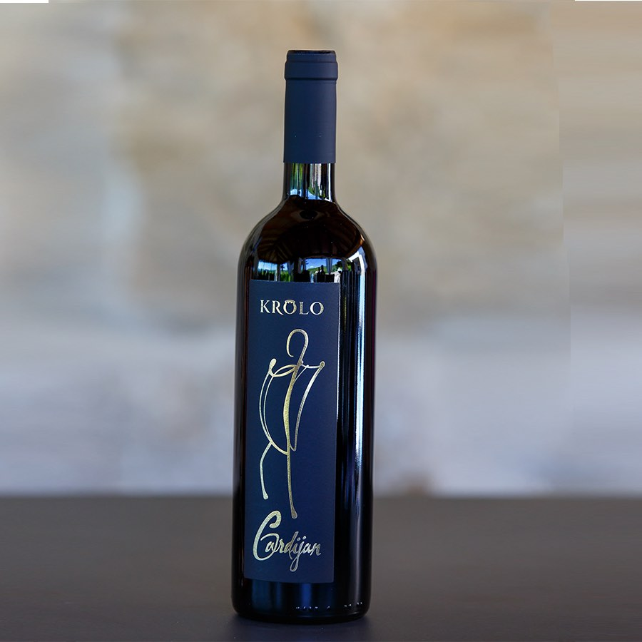
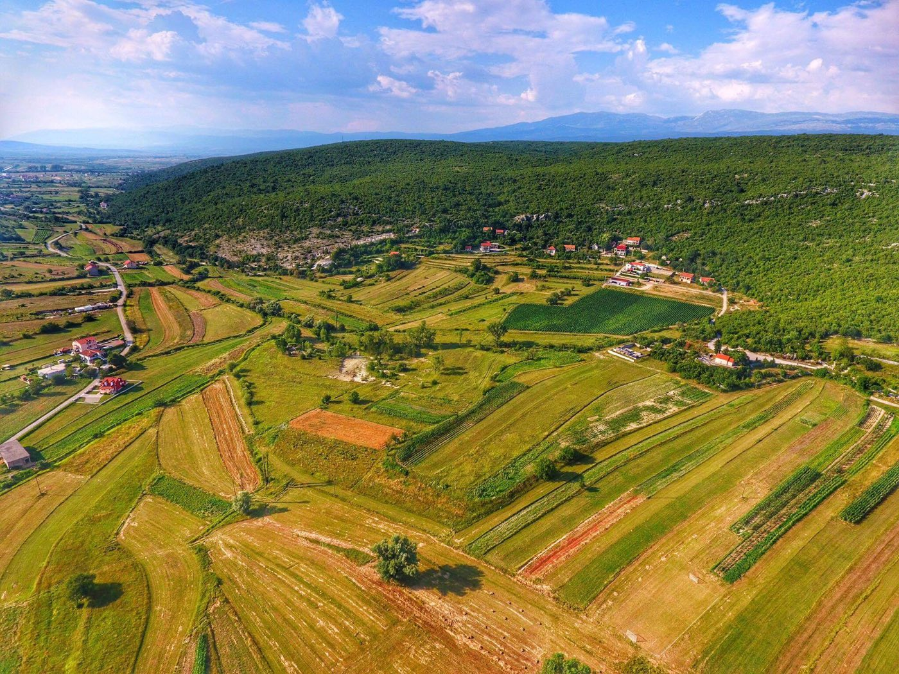
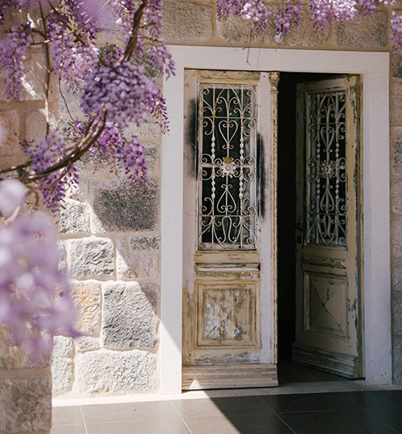
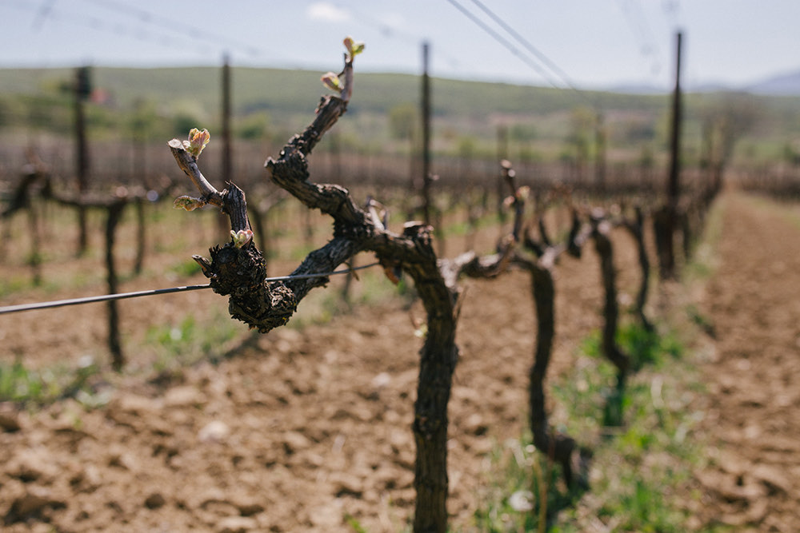
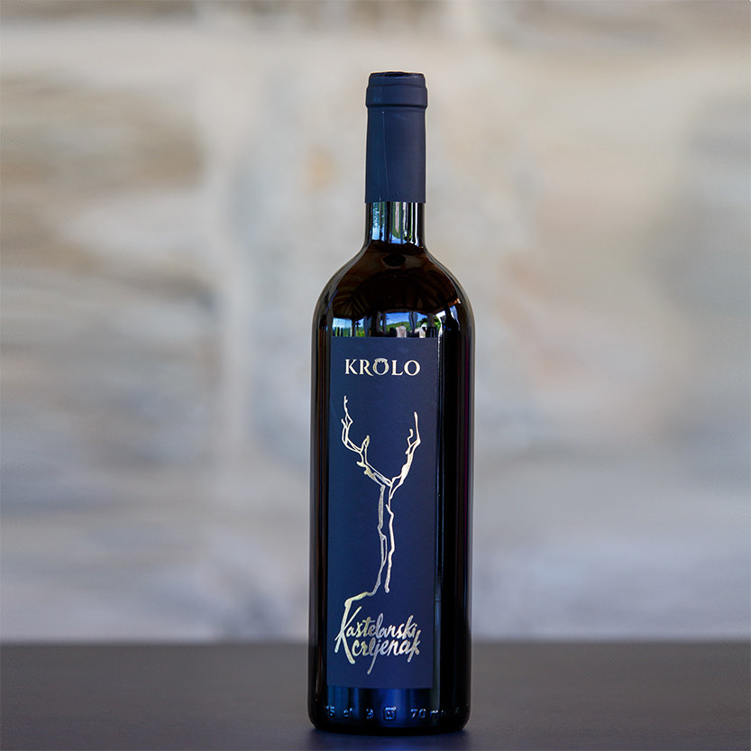
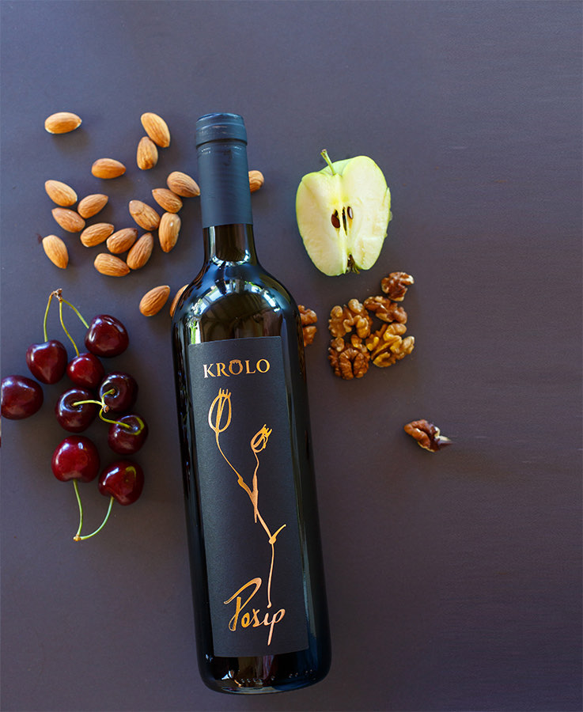

Crno · cabernet sauvignon
Gardijan
Sorta porijeklom iz Bordeauxa: puni okus, puno tanina i primjetna kiselost koja vinu daje potencijal za starenje. Snaga zagorskog vinograda u čaši.
Više o vinu
Na rubu Dalmatinske zagore, gdje ljetne noći padnu i do 15 °C, obitelj Krolo uzgaja grožđe koje zadržava i slador i svježinu. Dođite ga kušati ondje gdje raste.
Vino je proizvod ljudske civilizacije, ali i ogledalo ljubavi, brige i znanja svakog strastvenog vinara. Jedan od njih je Dražan Krolo, osnivač i vlasnik vinarije koja nosi njegovo prezime.
Put do vinarije vodi kroz Trilj i Strmendolac do zaseoka Krolo, gdje su kuća i vinograd Dražana i Karoline – gostoljubivih domaćina na neobičnom i slikovitom komadu dalmatinskog zaleđa.

Vinogradarstvo je u obitelji Krolo tradicija stara više od 300 godina. Vinograd se ovdje obrađivao generacijama, mnogo prije nego što je na boci pisalo prezime.
Jedini potomak koji je, uz duboko poštovanje prema naslijeđu, vinu posvetio i privatni i poslovni život – i tom strašću zarazio ostatak obitelji.
Početak novog tisućljeća bio je za obitelj Krolo i početak planiranja povratka zemlji svojih predaka – daleko od Kaštel Lukšića.
Područje oštre kontinentalne klime danas je dom vinima punog tijela, prepoznate elegancije i jedinstvene svježine. Voćnost i svježina glavne su osobine svih sorti u ponudi.
Nakon berbe, kad loza napokon počine, počinje složen proces proizvodnje. Potrebne su najmanje dvije, odnosno tri godine da vino sazrije – i do 40.000 boca godišnje stigne na tržište.

Strmendolac je malo mjesto 30-ak kilometara sjeverno od Splita i posljednja crta uzgoja vinove loze. Nadmorska visina i planinski lanci koji okružuju kraj stvaraju oštru kontinentalnu klimu, a noći su hladne tijekom cijele godine.
Upravo te razlike između dana i noći daju sklad: grožđe doseže visoku razinu sladora, a kiseline ne padaju ispod željene razine. Zato vina mogu biti snažna, a opet izrazito voćna i svježa.

Sorta porijeklom iz Bordeauxa: puni okus, puno tanina i primjetna kiselost koja vinu daje potencijal za starenje. Snaga zagorskog vinograda u čaši.
Više o vinu
Stara, gotovo zaboravljena hrvatska sorta – u Kaliforniji poznata kao zinfandel, u Italiji kao primitivo, a u povijesnim zapisima kao tribidrag.
Više o vinu
Sorta velike sposobnosti nakupljanja šećera, nastala spontanim križanjem bratkovine i zlatarice. Često je zovu neokrunjenim kraljem bijelih vina Dalmacije.
Više o vinuIntenzitet i elegancija cabernet sauvignona se jako lijepo ističe i može se reći, dominira. Vino sramežljivog početka i veličanstvenog finala.Saša Špiranec, Zagreb · o vinu Krolo Cabernet Sauvignon – Merlot 2009.
Sva gastro ponuda može se prilagoditi veganima, vegetarijancima i osobama koje ne podnose gluten – javite nam to barem tri dana prije dolaska.
Vlasnici
Prodaja i distribucija
Voditelj podruma
Degustacije
Degustacije
Degustacije i vinske ture održavaju se uz rezervaciju 4–5 dana unaprijed. Za narudžbu vina ili dogovor posjeta pošaljite upit ili nazovite.